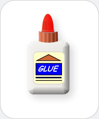

|  |
Glue
Chemicals you may find: Cyanoacrylate Epoxy (polymer formed from epichlorohydrin and bisphenol A) Acrylic resins Rubber cement (polymers dissolved in acetone, hexane, heptane, benzene, or other solvents) Gums (from dextrin, gelatin, gum Arabic) Vegetable glues (mucilage, soybean, rice glue) Animal glues (bone, hide, fish, hoof glue) |
| Glues are used to attach materials to one another, e.g., a stamp to an envelope. The choice of glue depends on which materials one needs to affix. In the past glues were mostly produced from animal tissues like fish, hide, bones utilizing protein colloids. Today petrochemical glues, often dissolved polymers, are used. However, natural glues based on animal tissue or vegetables (e.g., rice) are available as well. | |